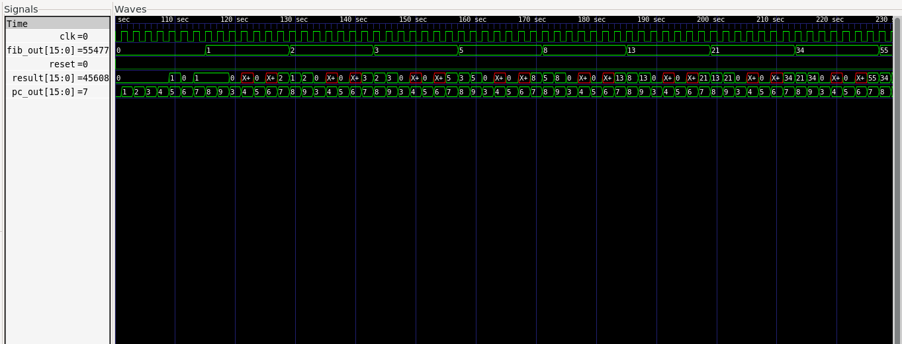

Projects / 04
A 16-bit CPU, from ISA to FPGA
I designed my own instruction set, built a five-stage pipelined processor for it in SystemVerilog, wrote an assembler, and put it on a small FPGA board where it counts Fibonacci numbers until it overflows.

The design
The ISA has 12 instructions: ADD, SUB, AND, OR, XOR, NOT, shift left and right, LOAD, STORE, BEQ and HALT. A small Python assembler turns readable assembly into the hex the instruction memory loads.
Pipelining means up to five instructions are in flight at once, which creates hazards. I handled three kinds:
- Data hazards. A forwarding unit spots when an instruction needs a result still sitting in the EX/MEM or MEM/WB register and routes it straight into the ALU inputs.
- Load-use hazards. When a value is needed the cycle after it's loaded, forwarding can't help, so the pipeline stalls for one cycle: PC and IF/ID freeze, ID/EX is zeroed.
- Branches. BEQ resolves in EX, so two wrong instructions have already been fetched when a branch is taken. They're flushed, at a 2-cycle penalty.

On real hardware
The CPU runs on a Gowin Tang Nano 9K on a divided clock (about 1.6 Hz) so you can watch each value appear. A double-dabble converter turns the 16-bit result into five BCD digits, and a driver I wrote for the TM1637's two-wire serial protocol (start/stop, byte transfer, ACK, brightness) puts them on two 4-digit seven-segment displays. After 46,368 the next Fibonacci number doesn't fit in 16 bits, and a red LED lights up to show the overflow.
Watch the demo video on GitHub →
What broke on the way
Simulation passing turned out to be the easy part:
- Garbage in memory. I'd initialized memory with an
initialblock, which simulators honor and the FPGA silently ignores. Replaced it with a synchronous reset. - Synthesis crash. The data memory used the full 16-bit address for a 256-entry array, so the tool tried to build a 65,536-way mux. Slicing the address to 8 bits fixed it.
- Reset stuck on. The board's button is active-low; my CPU expected active-high.
What I learned
Hardware has two truths, simulation and silicon, and they don't always agree. This CPU later became the benchmark circuit for my GPU logic simulator. Next on its roadmap are an instruction cache and a proper class-based, constrained-random testbench.